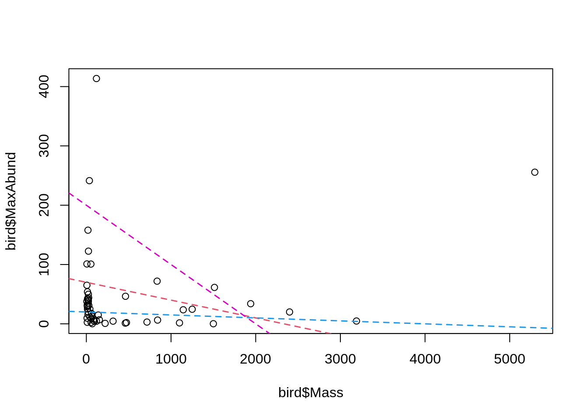

Chapitre 3 Le modèle linéaire
Les ateliers précédents ont exploré l’utilisation de R pour manipuler et représenter des données. Cependant, on s’intéresse souvent en science à déterminer les relations entre des variables. Cet atelier bâti sur les connaissances acquises préalablement et s’intéresse à la régression linéaire comme premier pas dans l’univers de l’analyse statistique.
Objectifs d’apprentissage
- Apprendre la structure d’un modèle linéaire et ses différentes variantes.
- Apprendre comment faire un modèle linéaire dans R avec
lm()etanova() - Apprendre comment identifier un modèle dont les conditions d’application ne sont pas satisfaites et comment régler le problème.
3.1 Qu’est-ce qu’un modèle linéaire ?
Le modèle linéaire décrit la relation entre une variable réponse et une ou plusieurs autres variables prédictrices. Elle est utilisée pour analyser une hypothèse bien formulée, souvent associée à une question de recherche plus générale. La régression détermine si les variables sont corrélées en inférant la direction et la force d’une relation, et notre confiance dans les estimations de l’effet.
Un travail scientifique important est nécessaire pour formuler un modèle linéaire. Puisque le modèle analyse une hypothèse, il est recommandé de formuler clairement les attentes concernant la direction et la force d’une relation en tant que prédictions avant d’effectuer un modèle linéaire.
3.1.1 Exemple : Abondance et masse des espèces d’oiseaux
Hypothèse
Pour différentes espèces d’oiseaux, la masse moyenne d’un individu a un effet sur l’abondance maximale de l’espèce, en raison de contraintes écologiques (sources de nourriture, disponibilité de l’habitat, etc.).
Prédiction
Les espèces caractérisées par des individus plus grands ont une abondance maximale plus faible.
Nous hypothétisons donc que les oiseaux caractérisés par une masse plus importante ont besoin de plus de nourriture et d’espace : la variable réponse est l’abondance maximale, et le prédicteur le poids moyen d’un individu.
En fonction de notre prédiction, nous pouvons nous attendre à ce que la direction de la relation entre la variable réponse et le prédicteur soit inverse ou ‘négative’, de façon à ce qu’une masse plus élevée entraîne une abondance plus faible. Cependant, nous ne pouvons pas formuler d’attentes sur la force de la relation !
Les données
L’exemple suivant explore le jeu de données “birdsdiet” :
# Importez le jeu de données 'bidsdiet' et le sauver dans
# l'objet 'bird'
bird <- read.csv("data/birdsdiet.csv", stringsAsFactors = TRUE)Le jeu de données bird contient sept variables :
# Explorez les variables du jeu de données 'bird'
str(bird)## 'data.frame': 54 obs. of 7 variables:
## $ Family : Factor w/ 53 levels "Anhingas","Auks& Puffins",..: 18 25 23 21 2 10 1 44 24 19 ...
## $ MaxAbund : num 2.99 37.8 241.4 4.4 4.53 ...
## $ AvgAbund : num 0.674 4.04 23.105 0.595 2.963 ...
## $ Mass : num 716 5.3 35.8 119.4 315.5 ...
## $ Diet : Factor w/ 5 levels "Insect","InsectVert",..: 5 1 4 5 2 4 5 1 1 5 ...
## $ Passerine: int 0 1 1 0 0 0 0 0 0 0 ...
## $ Aquatic : int 0 0 0 0 1 1 1 0 1 1 ...Notez que Family, Diet, Passerine, et Aquatic sont toutes des variables catégoriques, malgré le fait qu’ils soient encodés de façons différentes (chaîne de caractères, catégorique, binaire).
Les variables d’intérêt au test de l’hypothèse sont :
- “MaxAbund” : La plus grande abondance observée sur un site en Amérique du Nord (continu / numérique)
- “Masse” : La taille du corps moyenne en grammes (continue / numérique)
Concepts de base
Il existe deux concepts clés pour comprendre les modèles linéaires: la localisation et la variation. Attention! Ces concepts sont centraux à la compréhension des autres concepts présentés dans l’atelier.
La localisation est une mesure de tendance centrale d’une population. Elle peut être mesurée entre autres avec la moyenne arithmétique \(\bar{x} = \frac{1}{n} \sum_{i=1}^{n} x_{i}\) :
# Moyenne de l'abondance maximale observée
mean(bird$MaxAbund)## [1] 44.90577ou la médiane :
# Médiane de l'abondance maximale observée
median(bird$MaxAbund)## [1] 24.14682Par contre, la moyenne ne peut pas caractériser une population au complet. Nous pouvons donc aussi décrire une population à l’aide de mesures de variation. La variation est la dispersion (ou l’écart) des observations autour de la moyenne. Elle se mesure avec la variance \(\sigma^2 = \frac{1}{n} \sum_{i=1}^{n} {(x_{i} - \bar{x})}^2\). La variance est la somme de l’écart élevée au carré entre chaque valeur et la moyenne. L’élévation de l’écart au carré permet de transformer les valeurs en valeurs positives sans utiliser de valeurs absolues.
# Variance de l'abondance maximale observée
var(bird$MaxAbund)## [1] 5397.675Par contre, en élevant toutes les valeurs au carré, on change les unités de nos variables. Dans cet exemple, la variance est donnée en abondance^2, une unité qui n’est plus pertinente pour notre question initiale. Pour transformer ces valeurs en unités appropriées, nous pouvons calculer l’écart type \(\sigma\).
# Écart type de l'abondance maximale observée
sd(bird$MaxAbund)## [1] 73.46887Exploration visuelle
La figure suivante trace la variable réponse en fonction du prédicteur :
# Tracer la réponse en fonction du prédicteur
plot(bird$Mass, bird$MaxAbund)
Cette figure présente la variation de l’abondance maximale en fonction de la masse de l’oiseau. Nons sommes intéressés à quantifier cette relation. Autrement dit, nous sommes intéressés à quantifier l’effet de la masse des espèces d’oiseaux sur leur abondance maximale. Cependant, comment trouver la “meilleure” estimation de la relation ?

La “meilleure” estimation est la ligne qui minimise la somme des carrés. Cela se clarifiera dans les prochaines sections. Notez que la “meilleure” estimation peut également être l’absence de relation, similaire à la ligne bleue dans la figure.
3.2 Formulation d’un modèle linéaire
Le modèle linéaire décrit la “meilleure” relation entre une variable réponse (“MaxAbund”) et une ou plusieurs prédicteurs (ici “Mass”). La variable réponse est la variable que nous voulons expliquer, ou la variable dépendante. Il n’y a qu’une variable réponse. Les variables explicatives sont des variables qui peuvent (potentiellement) expliquer la variable réponse. On peut inclure une ou plusieurs variables explicatives.
Dans un modèle linéaire, nous définissons une observation de la variable réponse \(y\), comme étant \(y_i\). Dans notre exemple, cela représente une observation d’abondance maximale pour une espèce \(i\).
Une observation correspondante du prédicteur \(x\) est définie comme \(x_i\) et représente, par exemple, le poids moyen d’un individu d’une espèce \(i\).
Dans les modèles linéaires, on utilise les concepts de moyenne et de variation pour décrire la relation entre deux variables. Nous disons “modèles linéaires”, parce qu’ils décrivent la relation entre variables avec une droite. Cette droite représente la relation supposée:
\[ y_i = \beta_0 + \beta_1 \times x_i + \epsilon_i\]
- \(y_i\) est la variable réponse
- \(x_i\) est le prédicteur
- Le paramètre \(\beta_0\) est l’ordonnée à l’origine
- Le paramètre \(\beta_1\) quantifie l’effet de \(x\) sur \(y\)
- Le résidu \(\epsilon_i\) représent la variation non expliquée
- La valeur prédite de \(y_i\) se définit comme : \(\hat{y}_i = \beta_0 + \beta_1 \times x_i\)
3.3 Évaluation du modèle linéaire
Le modèle linéaire évalue s’il y a une corrélation significative entre la variable réponse et la ou les variables explicatives. Ceci est fait en évaluant si la valeur moyenne de la variable réponse diffère significativement entre les différentes valeurs des variables explicatives, comme pour la variation de l’abondance maximale des oiseaux en fonction de leur masse.
Pour les variables explicatives catégoriques, le modèle linéaire évalue si la valeur moyenne de la variable réponse diffère significativement entre les différents niveaux (ou groupes) des variables explicatives. Ceci deviendra plus clair en explorant les types de modèles linéaires dans les sections suivantes.
Dans presque tous les cas, les variables explicatives n’expliquent pas toute la variation dans la variable réponse. La variation qui reste inexpliquée est les résidus, ou l’erreur.
3.4 Conditions d’application du modèle linéaire
Le modèle linéaire est défini selon l’équation que nous avons explorée précédemment :
\[ y_i = \beta_0 + \beta_1 \times x_i + \epsilon_i\]
Pour être valides, tous les modèles linéaires s’appuient sur 4 conditions de base. Si les 4 conditions ne sont pas respectées, les résultats du modèle ne peuvent pas être interprétés de façon valable.
- Relation linéaire entre la réponse et le prédicteur
- Les résidus suivent une distribution normale avec une moyenne de \(0\)
- Les résidus sont distribués de manière identique (homoscédasticité)
- Les résidus sont indépendants les uns des autres
Notez que ces 4 conditions concernent les résidus, et non les variables réponses ou explicatives. Cela ne veut pas dire que l’ensemble des valeurs observées \(y\) doivent suivre une distribution normale !
3.4.1 Normalité des résidus
Pour que les résultats d’un modèle linéaire soient valides, les résidus \(\epsilon\) doivent suivre une distribution normale avec une moyenne de \(0\) et une variance de \(\sigma^2\), de façon à ce que la majorité des résidus aient une valeur proche de 0 (i.e. l’erreur est très petite) et que leur distribution soit symétrique (i.e. la variable réponse est sous-estimée autant qu’elle est surestimée) :
\[\epsilon_i \sim \mathcal{N}(0,\,\sigma^2)\]
Cela veut dire : Chaque obsevation \(y_i\) suit une distribution normale, avec moyenne \(\hat{y} = \beta_0 + \beta_1 \times x_i\) et variance \(\sigma^2\):
\[y_i \sim \mathcal{N}(\hat{y},\,\sigma^2)\]
3.5 Notation des modèles linéaires
Cette section vise à fournir une compréhension de base des différents types de description de modèles linéaires qu’il est possible de rencontrer. La première est la notation mathématique et la seconde la notation en R.
3.5.1 Notation mathématique
La notation mathématique est la seule forme de notation appropriée pour la rédaction de manuscrits. Nous notons les observations individuelles à l’aide de l’équation de la droite telle que vue dans les sections précédentes et de l’équation pour la distribution des résidus:
\[y_i = \beta_0 + \beta_1 \times x_i + \epsilon_i \quad \textrm{with} \quad \epsilon_i \sim \mathcal{N}(0,\,\sigma^2)\]
Pour noter l’ensemble des observations, nous suivons la notation matricielle et incluons l’intercepte dans\(\mathbf{X}\) et \(\boldsymbol{\beta}\)) :
\[\mathbf{y}= \mathbf{X}\boldsymbol{\beta} + \mathbf{\epsilon} \quad \textrm{with} \quad \epsilon_i \sim \mathcal{N}(0,\,I_n\sigma^2)\]
3.5.2 Notation en R
Il est à noter que la notation R n’est pas adéquate pour préparer une publication.
En R, nous écrivons la formule du modèle comme :
y ~ 1 + xOu encore plus simplement comme :
y ~ xqui inclut aussi la constante.
La variable prédite est toujours placée à gauche du tilde ~alors que les variables prédictricteurs sont placées à droite.
Il ne faut jamais mélanger les différents types de notation !
3.6 Effectuer un modèle linéaire
Nous avons vu qu’il est possible de définir un modèle linéaire avec cette équation :
\[ y_i = \beta_0 + \beta_1 \times x_i + \epsilon_i\]
3.6.1 Estimation du modèle
Effectuer un modèle linéaire revient à trouver les “meilleures” estimations des paramètres \(\beta_0,\, \beta_1\). C’est ce que nous appelons faire l’estimation du modèle.
Les “meilleurs” paramètres sont ceux qui minimisent la variation dans la variable réponse. La méthode la plus répandue pour minimiser la variation d’un modèle est de faire la somme des résidus au carré \(\sum{\epsilon_i^2}\). Cette méthode est appelée la méthode de moindres carrés ordinaire (MCO).